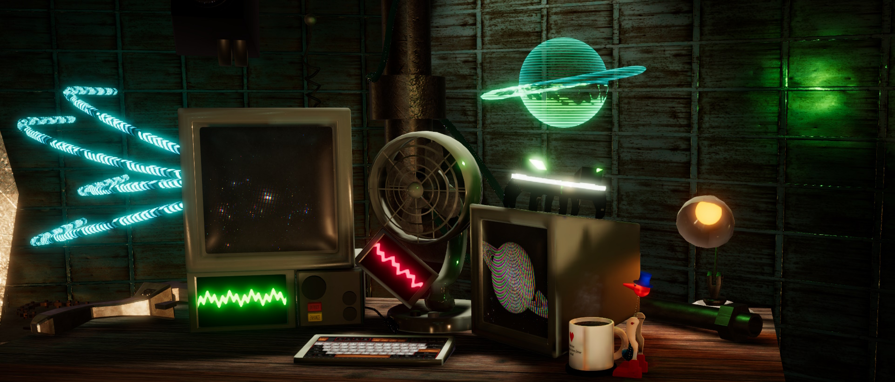
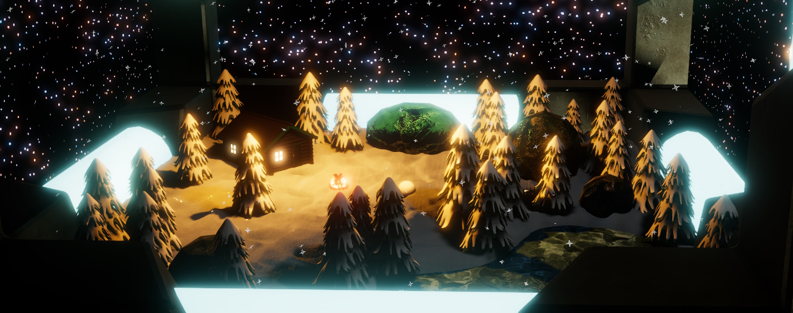
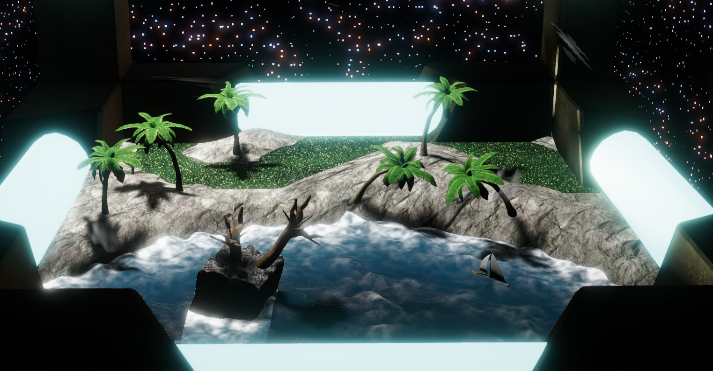
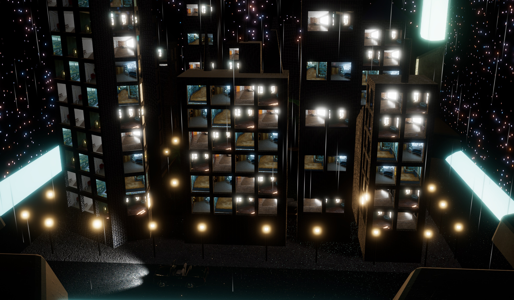
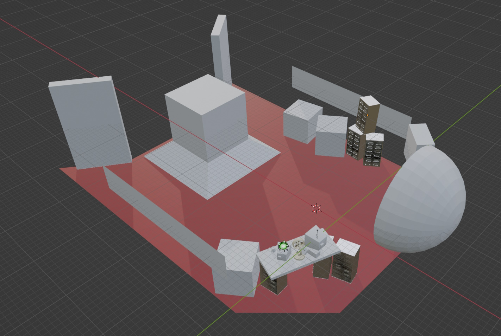
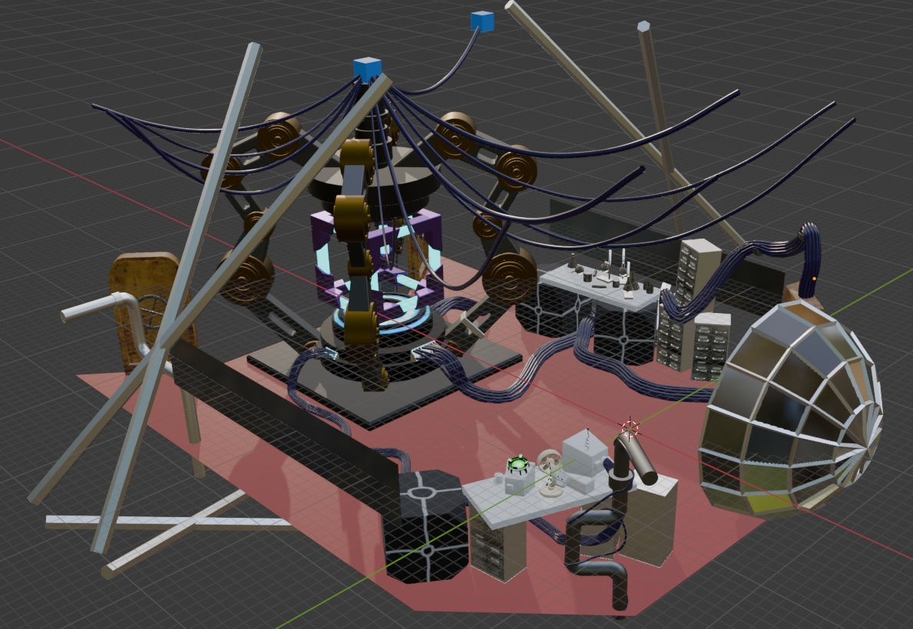
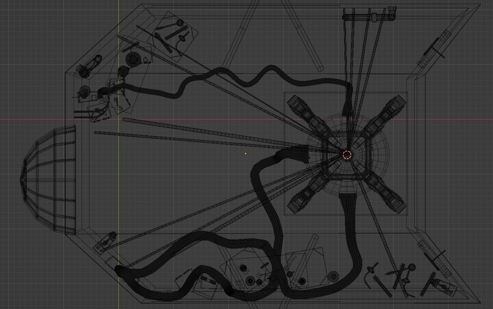
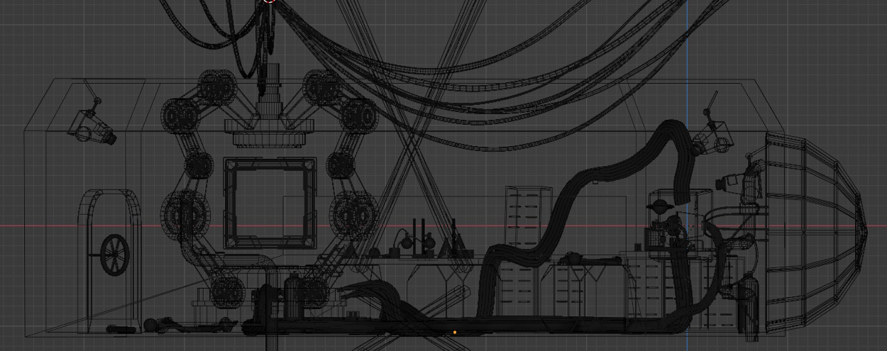
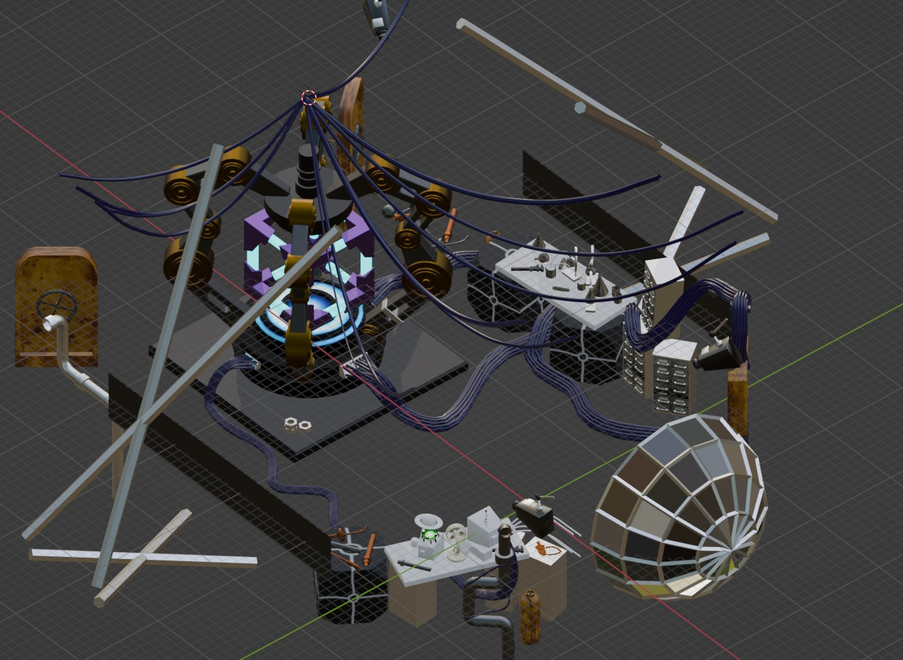

Retrofuturistic Shader Diorama
A diorama created in Unity containing many HLSL/CGPROGRAM shaders and many shadergraph shaders. I wrote a custom raymarcher to render a cloud/nebula effect.
The shaders included in the project are: Raymarched Nebula, Growing Deflector Shield, Fire/Thruster, Shell textured Grass, Wind, Ocean with object interaction (boat bobs up and down on the surface of the water), Snow with object interaction (objects leave trails in the snow), Leaves in the wind, Icy lake (POM), Stars, Ice block diffraction (objects within or behind the ice are distorted), Hologram, LCD screen with individual subpixels, Dynamic liquid container, Sci-fi cables, Editable tiles, Dynamic rain on tiles and floor, Detail mapped tiles, Oscilloscope screen, and Interior Mapping (for the rooms in the city).
The project uses the Universal Render Pipeline, and is very performant thanks to almost all the lighting being baked.
A stencil is used to mask out windows on different faces of a cube, and several tiny worlds are contained within.
The user can even enter these worlds with the camera, which is unusual for a stencil based approach.
 I also created every model in the scene except the car in the city diorama, using Blender.
This project was also my first foray into texturing, as previously I've created custom shaders for when I needed something coloured/patterned in Blender.
    